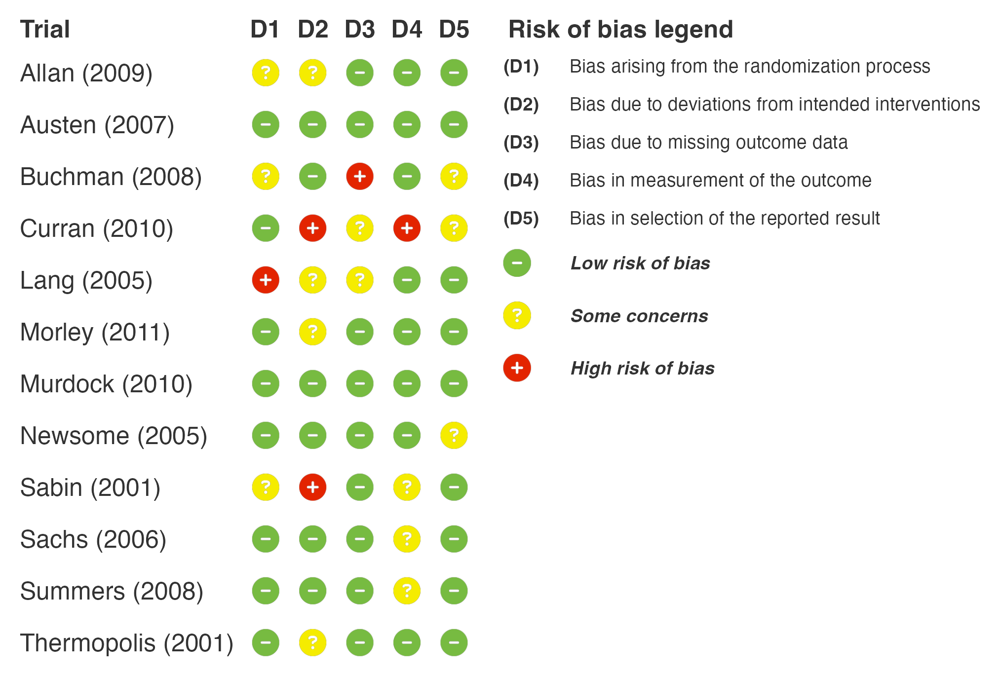
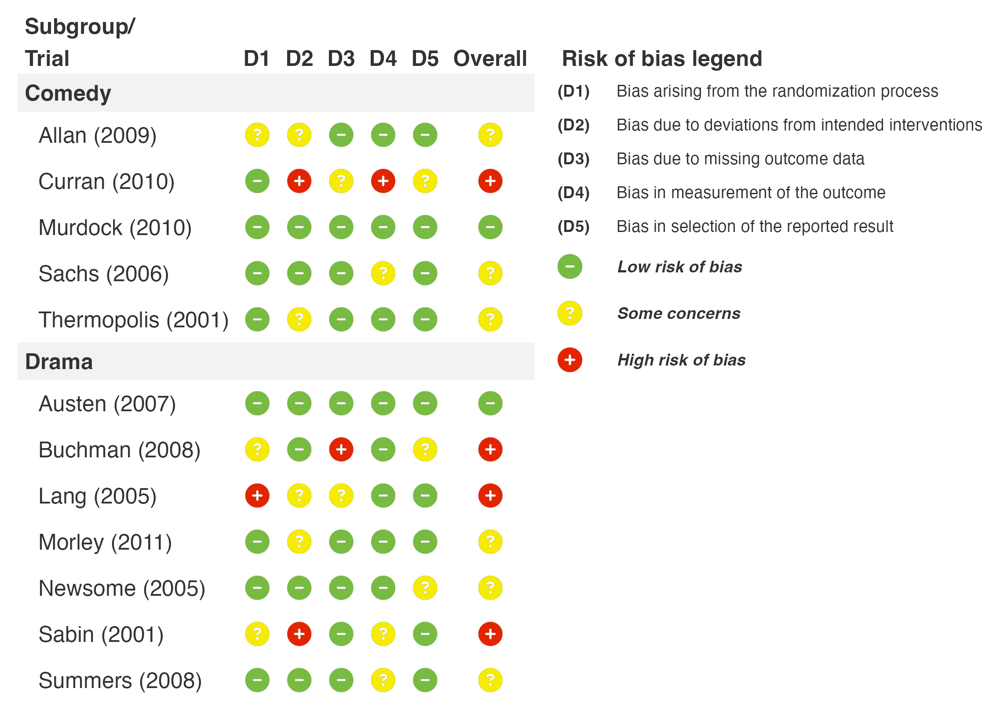
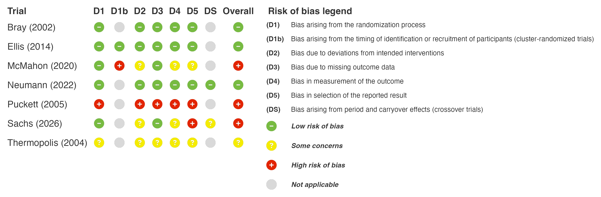
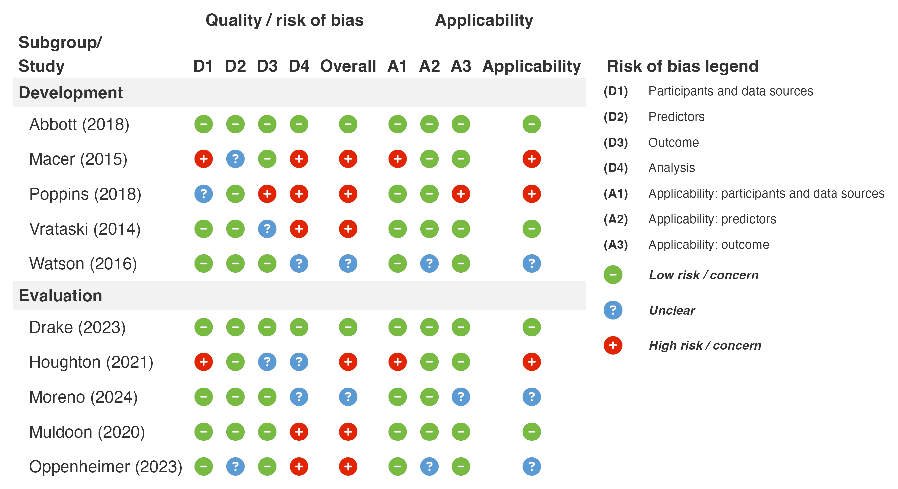
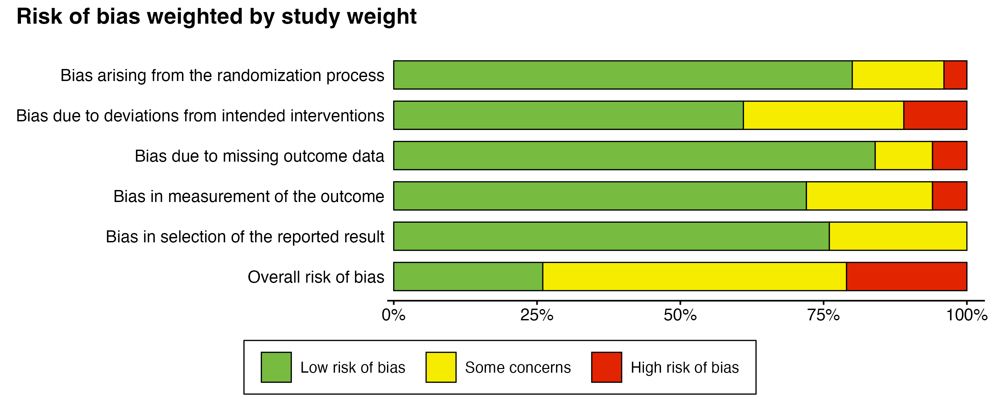
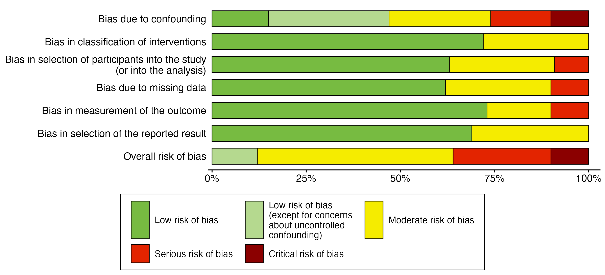

Overview
robbR is an R package for creating publication-ready risk of bias plots for systematic reviews and meta-analyses. It produces traffic-light tables of domain-level judgements and weighted summary bar plots, for a wide range of risk of bias and quality assessment tools.
Key Features
- Traffic-Light Plots: Domain-level judgements for each study, displayed as icons in a clean table
- Weighted Summary Plots: Stacked bar plots of the proportion of studies (or meta-analytic weight) at each judgement
- Multiple Tools: RoB 2 (including cluster-randomised and crossover variants), ROBINS-I V2, ROBINS-E, QUADAS-2, CLARITY, RoB NMA, PROBAST and PROBAST+AI
- Automatic Overall Judgements: Overall risk of bias is derived from the domains when not supplied
- Flexible Input: Judgements such as “low”, “Low risk” and “low risk of bias” are standardised automatically
- Subgroup Analysis: Group studies by outcome, design or analysis
- Tool-Specific Legends: Legends list only the domains and judgements present in the plot
- Extensive Customisation: Fonts, titles, sorting and layout
Supported Tools
rob_tool |
Tool | Domain columns | Overall columns |
|---|---|---|---|
"rob2" |
RoB 2 | D1, (D1b), D2–D5, (DS) | Overall |
"robins_i" |
ROBINS-I V2 | D1–D6 | Overall |
"robins_e" |
ROBINS-E | D1–D7 | Overall |
"quadas2" |
QUADAS-2 | D1–D4 | Overall |
"clarity" |
CLARITY | D1–D10, (D11), (D12) | None |
"rob_nma" |
RoB NMA (with ROBIS domains 1–3) | (R1–R3), D1–D3 | Results, Conclusions |
"probast" |
PROBAST | D1–D4, (A1–A3) | Overall, Applicability |
"probast_ai" |
PROBAST+AI | D1–D4, (A1–A3) | Overall, Applicability |
Columns in brackets are optional. Missing judgements (NA) are shown as “Not applicable”.
Installation
You can install the development version of robbR from GitHub:
# install.packages("devtools")
devtools::install_github("BLMoran/robbR")Basic Usage
robbR expects one row per study, with columns for the study label (Author), year (Year) and each domain (D1, D2, …). Example datasets are included for every tool (see ?rob_datasets).
library(robbR)
rob2_dataHide the Overall Column
rob_plot(rob2_data, show_overall = FALSE, add_rob_legend = TRUE)
Add Subgroups
rob_plot(
data = rob2_data,
subgroup = TRUE,
sort_subgroup_by = c("Comedy", "Drama"),
add_rob_legend = TRUE
)
RoB 2 Algorithm (Parallel, Cluster and Crossover Trials)
Enter the answers to the signalling questions and rob2_algorithm() applies the RoB 2 algorithms to give the domain and overall judgements.
rob2_sq_data |>
rob2_algorithm(design = design) |>
rob_plot(add_rob_legend = TRUE)
PROBAST+AI
rob_plot(
data = probast_ai_data,
rob_tool = "probast_ai",
subgroup = TRUE,
sort_subgroup_by = c("Development", "Evaluation"),
add_rob_legend = TRUE
)
Weighted Summary Plot
rob_summary(
data = rob2_data,
weight = weight,
title = "Risk of bias weighted by study weight"
)
Weighted Summary Plot (ROBINS-I)
rob_summary(robins_i_data, weight = weight, rob_tool = "robins_i")
Citation
If you use robbR in your research, please cite:
@Manual{,
title = {robbR: Risk of Bias Plots for Meta-Analyses in R},
author = {[Benjamin Moran]},
year = {2026},
note = {R package version 0.0.0.9000},
url = {https://github.com/BLMoran/robbR},
}Please also cite the risk of bias tool used in your review.
Related Packages
- bayesfoRest for forest plots from Bayesian meta-analyses, with integrated risk of bias columns
Feedback, Issues and Contributing
We welcome feedback, suggestions, issues and contributions. Please feel free to contact Ben with any feedback. For any bugs, please file it here with a minimal code example to reproduce the issue. Pull requests can be made here. Please note that the robbR project is released with a Contributor Code of Conduct. By contributing to this project, you agree to abide by its terms.
Acknowledgments
robbR builds upon the excellent work of the gt, patchwork, fontawesome and tidyverse suite of packages, and was inspired by robvis. We also acknowledge the developers of the RoB 2, ROBINS-I, ROBINS-E, QUADAS-2, CLARITY, RoB NMA, PROBAST and PROBAST+AI tools. Without the work of the R and evidence synthesis communities, robbR would not be possible.